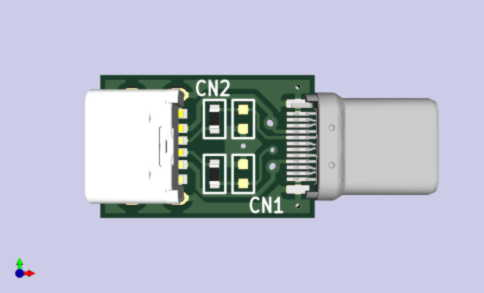

JUICEJACK DEFENDER の仕組み
このジュースジャック ディフェンダー の仕組みは、とても単純です。
回路図を参照してください。プラグとレセプタを電源用のラインと
CC のラインを繋いでいるだけです。
USB-PDは、USB-TypeCケーブルにある CC (A5端子)と呼ばれる信号線を使って 2つのデバイスを接続することで、機能します。
USBポートにケーブルを通してデバイスが接続されると、このCCという信号線を使って、電圧や電流、送電の向きなどを決めています。
またオプションで Display Portや HDMI信号などのオルタネートモードを決定しています。
この CC と呼ばれる信号線には、接続されたデバイスでUSBケーブルの使い方を決めるだけです。スマートフォンやパソコン用の
ファイルやデータなどを通すことはできません。データを通すための信号線は、別に配線された差動信号用の通信線を使っています。
JUICEJACK-DEFENDERでは、その信号線を接続しませんから、データ通信を一切することができません。攻撃のために必要なデータの
通信も行うことができません。
従って、USB Type-Cポートから USB-PDを使った充電を受けることができますが、悪意のある USBポートからのデータアクセスを
防ぐことができます。
なお、このJUICEJACK-DEFNDERが防ぐのは、悪意のあるUSBポートからのデータ通信を利用した攻撃です。物理的な破壊を
試みるような攻撃には対応できません。
たとえば、異常な電圧の印加(例えば AC100Vなど)によるデバイスの破壊を目的とするような攻撃には対応できません。
JUICEJACK-DEFENDERのパーツ配置

このイラストは、JUICEJACK-DEFENDERの3Dイラストです。 パーツは一部類似品のデータを使わせてもらっています。
右側の プラグが CN1, 左側の レセプタが CN2です。 CN2というシルクの下にある チップ抵抗が それぞれ R3, R4 です。
右側の未実装のチップ抵抗の位置が それぞれ R1, R2 になります。
PDFによるレイアウト図は、こちらから参照してください。
- CN1
- USB TypeCのプラグです。
- CN2
- USB TypeCのレセプタです。
- R1
- 5.1kΩの抵抗をつけられるように配置されていますが、実際には実装されていません。
- R2
- 5.1kΩの抵抗をつけられるように配置されていますが、実際には実装されていません。
- R3
- 0Ωの抵抗(ショート用)が実装され、プラグ側とレセプタ側の CC1 の信号線を接続しています。
- R4
- 0Ωの抵抗(ショート用)が実装され、プラグ側とレセプタ側の CC2 の信号線を接続しています。
プラグ側とレセプタ側の 電源用端子とGND用端子が直接接続されています。USB-PDによって供給された電源は、
これらの端子を通じて、電源が供給されます。
USB-PDは、A5 または B5 端子で接続された信号線を利用して送電側と受電側を決めたり、電源のワット数を決定したりします。
A5端子を経由するのか、B5端子を経由するのか、という点については、接続されるケーブルの向き(上下方向)によって
決まります。 この信号線は、USBのデータ通信に使われることはありません。
USBのデータ通信に使われる信号線は、TX1+/TX1-, TX2+/TX2-, RX1+/RX1-, RX2+/RX2-, D1+/D1-, D2/D2- の信号線に
なります。USB 3.2 や USB 2.0 のデータはこれらの信号線を使いますが、回路図の通り接続されていないため、
このアダプタを接続したUSB TypeCケーブルでは、USB-PDを利用することが出来ても、データ通信が出来なくなります。
R1～R4について
R3 と R4 は、プラグ側とレセプタ側の CC1 および CC2 を接続するためのチップ抵抗です。JUICEJACK-DEFENDER を経由して
60Wまでの電力をやりとりするために必要な配線です。 (JUICEJACK-DEFENDER で使用しているコネクタの定格電流は 3Aまで
なので、 60W以下で使用してください)
USB PDで 送電側と受電側を決めたり、必要とする電力についてネゴシエーションするためには、小さくても対応するためのIC等が
必要となってしまいます。動作用電力が必要な場合に必ずネゴシエーションが必要な規格にしてしまうと、例え小さなUSBデバイスでも
ネゴシエーション用のIC等が必要になります。IC等を実装すると、複雑になり、コストも上がってしまいます。
そこで、5Vのみで動作する小さなデバイスでは、ネゴシエーション用のIC等がなくても電源供給を受けられるようにする規格が
CC のラインを 5.1kΩの抵抗でプルダウンすることです。
JUICEJACK-DEFENDER の R3 および R4を取り外したうえで、R1 および R2 に 5.1kΩの抵抗を実装し、プラグ側を ACアダプタ
などに接続すれば、5Vを取り出せる電源のトリガアダプタとしても使えるように設計しています。
(R3, R4を実装する場合は、必ず R1, R2 の取外しが必要です)
JUICEJACK-DEFENDERのページに戻る
Copyright 2024 (C) By HardwareDreams